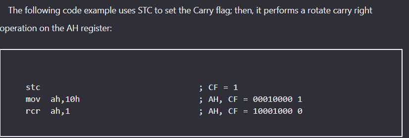
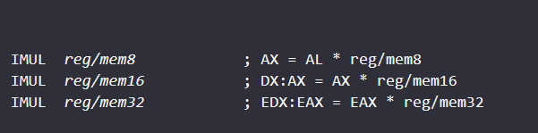

chapter7
Integer Arithmetic
- 1. 1. Shift and Rotate instructions – how do they work? What flags can they set? Look at code and be
able to tell what happens after one of these instructions runs.
a. Example: mov al,01101011b
shr al,2
- 2. 2. The MUL/IMUL instruction/The DIV/IDIV instruction
SHIFT INSTRUCTION
UNSIGNED integer
SHL
destination,count
SHL reg,imm8
SHL mem,imm8
SHL reg,CL
SHL mem,CL
SHR
SIGNED INTEGER
SAL = SHL
SAR != SHR
to save the signed extension
ROL instruction
uses the Carry flag as an intermediate point for shifted bits.
UNSINGED INTEGER
ROL
example:
ROR
SINGED INTEGER
RCL
RCR

SHLD/SHRD instruction

Multiplication and Division Instructions
UNSINGED INTEGER
MUL
MUL sets the Carry and Overflow flags if the upper half of the product is not equal to zero.
EXAMPLE 2
IMUL (SINGED VARIATION)
- Preserves the sign of the product by sign extending the highest bit of the lower half of the product into the upper bits of the product.
- the Carry and Overflow flags are set if the upper half of the product is not a sign extension of the lower half.

Unsigned Integer Division (DIV)
8 bit division
16 bit division
32 bit division
Signed Integer Division (IDIV)
beware of divide overflow when the result cannot hold value bigger than it range.The dividend must be sign-extended before the division takes place
example 2:

Sign Extension Instructions (CBW, CWD, CDQ)